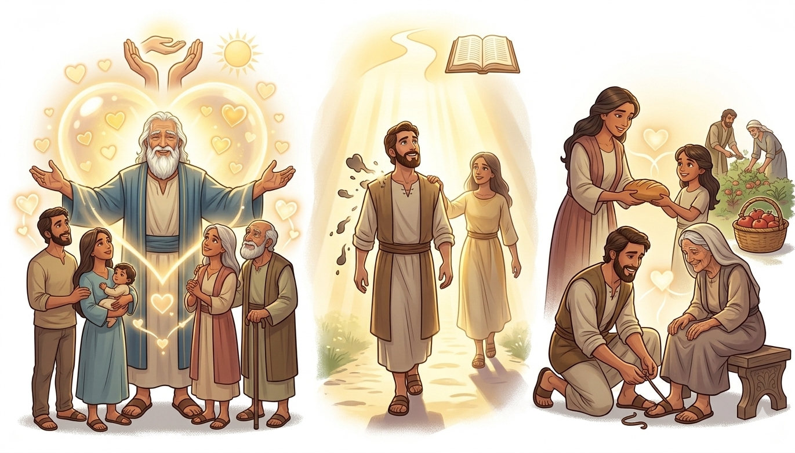
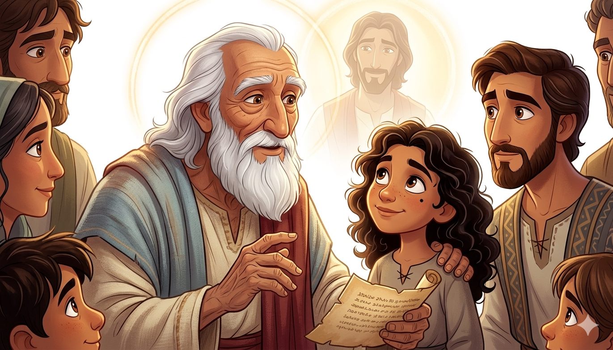
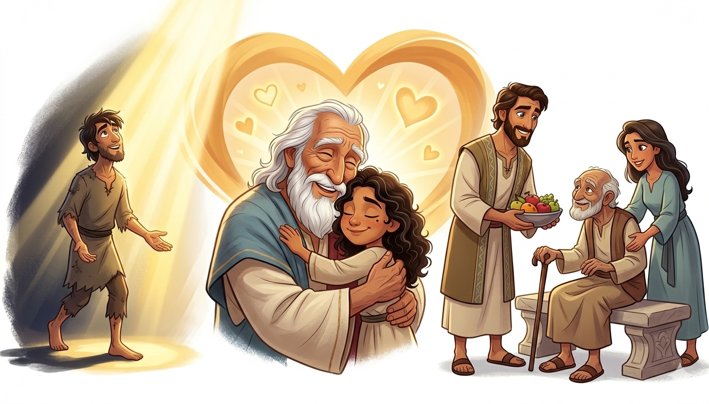
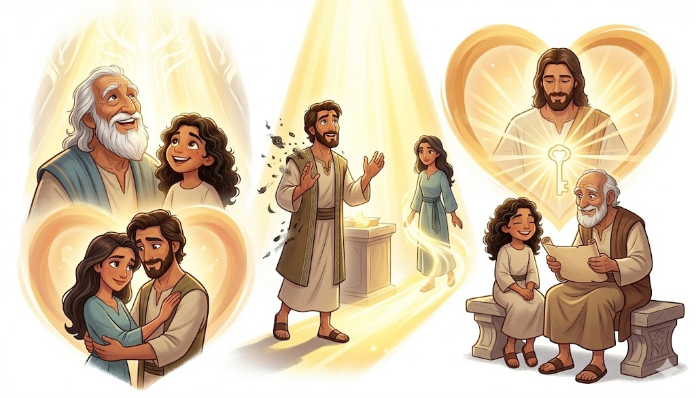
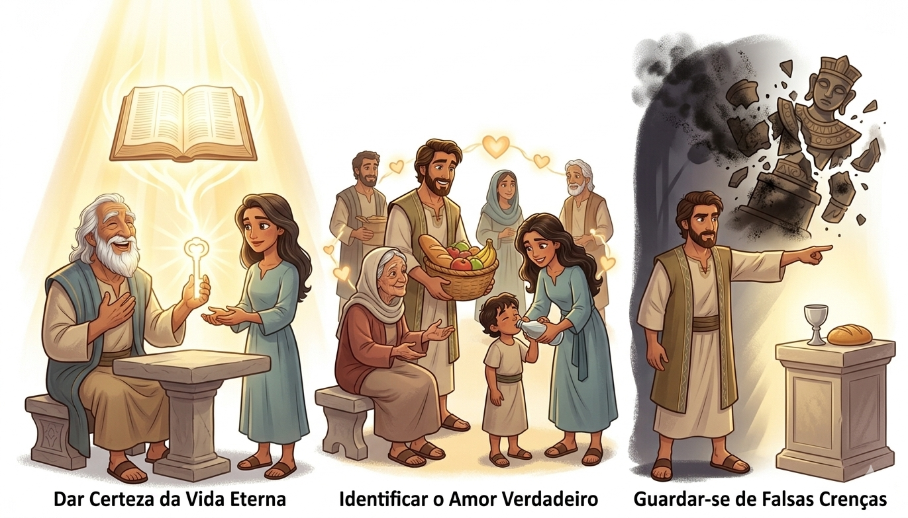
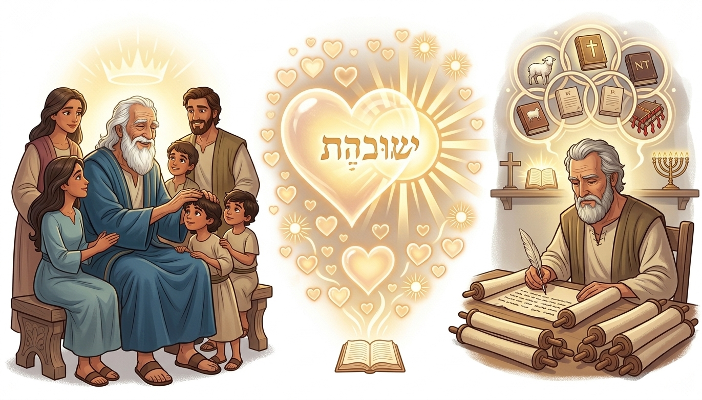

O Amor Verdadeiro que Vem de Deus — Um Resumo Visual para Crianças
Deus não tem amor, Ele É amor de verdade,
Quem conhece o Pai, vive em caridade!
Não é só sentir, é amar de coração,
Pois o amor de Deus transforma toda ação!
📖 1 João 4:8 - "Aquele que não ama não conhece a Deus, porque Deus é amor."
Se andamos na luz, não há trevas ao redor,
Jesus nos purifica com Seu grande amor!
Confessar os erros traz perdão e paz,
E a comunhão com Deus nunca se desfaz!
📖 1 João 1:7 - "Se, porém, andarmos na luz... o sangue de Jesus... nos purifica de todo pecado."
Quem diz que ama a Deus, mas odeia o irmão,
Não conhece Cristo, vive em ilusão!
O verdadeiro amor se vê na ação,
Cuidando uns dos outros com o coração!
📖 1 João 4:20 - "Se alguém diz: Amo a Deus, e odeia a seu irmão, é mentiroso..."
João era o discípulo que Jesus amava! Ele escreveu esta carta quando já estava bem velhinho, compartilhando o que aprendeu em anos de caminhada com Jesus.
🌟 Sua Mensagem:
Ensinar que o amor verdadeiro vem de Deus e deve ser praticado entre os irmãos!
João escreveu para os cristãos da época, chamando-os de "filhinhos". Ele queria que eles conhecessem o amor de Deus e vivessem na luz, amando uns aos outros!


João ensina que o amor verdadeiro não é apenas um sentimento - é uma forma de viver! Ele explica que Deus É amor, e quem conhece a Deus, ama de verdade.
Andar na Luz
Viver de forma transparente, sem esconder pecados
Amar os Irmãos
Demonstrar amor prático uns pelos outros
Conhecer Jesus
Ter um relacionamento verdadeiro com Cristo
Este livro mostra que quem ama vive na luz e conhece a Deus de verdade! Não podemos dizer que amamos a Deus se odiamos nossos irmãos.
❤️ O Amor Verdadeiro
É impossível conhecer a Deus e não amar as pessoas ao nosso redor!
🌟 A Luz de Cristo
Quando vivemos na luz, nossas ações refletem o caráter de Jesus!
✅ Certeza da Salvação
João nos ajuda a ter certeza de que somos filhos de Deus!


João escreveu para reforçar que o amor é a marca dos verdadeiros filhos de Deus! Não é só falar que amamos - precisamos demonstrar esse amor em nossas ações.
🌟 Três Pilares do Amor:
"Nisto conhecerão todos que sois meus discípulos: se tiverdes amor uns aos outros." - João 13:35
João fala muito sobre "luz" e "amor" nesta carta! Essas são as duas grandes marcas da vida cristã que ele aprendeu com Jesus.
💡 A Palavra "Luz"
Aparece mais de 20 vezes! João ensina que Deus é luz e nEle não há trevas!
❤️ A Palavra "Amor"
Aparece mais de 40 vezes! É o tema principal da carta de João!
👴 João Idoso
Quando escreveu, João tinha mais de 90 anos! Por isso chama todos de "filhinhos"!
🌟 Curiosidade Extra:
João é o único apóstolo que não morreu como mártir. Ele viveu até idade avançada e escreveu 5 livros do Novo Testamento: o Evangelho de João, 1, 2 e 3 João, e Apocalipse!

© 2025 - Trilho Kids
Desenvolvido com ❤️ para crianças